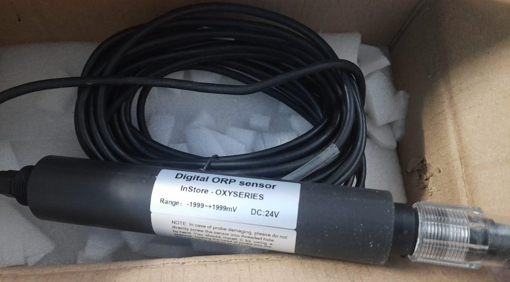
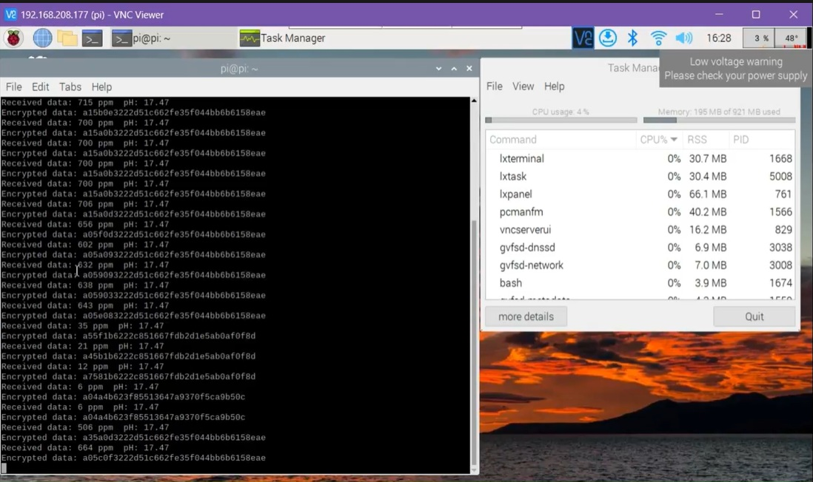

IoT-Blockchain Water Quality & Monitoring Drone
How do you trust water-quality data collected in remote areas? You put it on a blockchain. I built an autonomous drone that collects environmental readings with industrial sensors and logs every data point to a decentralized ledger for tamper-proof monitoring.

Water quality monitoring industrial sensor we used
The Problem
Traditional water quality monitoring is manual, slow, and critically easy to tamper with. Environmental data collected in the field can be altered before it reaches regulators. The challenge was to build a system where the data speaks for itself: collected autonomously and secured cryptographically so no one can change it after the fact.
How I Built It
The platform combines a Jetson Orin for onboard processing with industrial-grade water quality sensors pH, dissolved oxygen, turbidity, temperature. The Jetson handles sensor fusion (wrote code for RS485 protocol), system control interfacing, and the blockchain client that signs and commits each reading to a distributed ledger. Find the basic setup video made using a RPi below. Unfortunately I am unable to get the real floater images. But we did interface the sensor with the Orin and got it to run on a car battery along with the blockchain server setup sending encrypted sensor data.
The blockchain layer is what makes this different from a typical sensor drone. Each measurement is timestamped, digitally signed on the device itself, and pushed to the chain. Once it's there, it can't be quietly edited. Stakeholders can audit the full history and verify that every data point traces back to a real sensor reading at a specific GPS coordinate and time. Many use cases like, monitoring for water bodies near industial areas, marine life water severity sensing, cycle data logging etc.
The biggest problem? Corruption. Industries dumping toxic waste into lakes and rivers know exactly when inspectors are coming to collect water samples. They clean up just before the visit, pass the test, and go right back to dumping once the inspectors leave. The whole process takes days — plenty of time to game the system. Our setup solves that by collecting and logging water quality data autonomously and continuously, with every reading locked to a blockchain so no one can tamper with the evidence after the fact.
Tech Stack
Demo Video

Results
- $1,000 in SSIP funding (Student Startup and Innovation Policy)
- Decentralized, tamper-proof monitoring — blockchain-secured data trail
- Multi-parameter sensing with real-time onboard processing on Jetson Orin
What I Took Away
This project pushed me to think about trust in data, not just collecting it, but proving it's real. It also gave me practical experience bridging hardware sensor systems with decentralized software, which is a combination I hadn't seen anyone else try on an embedded drone platform.